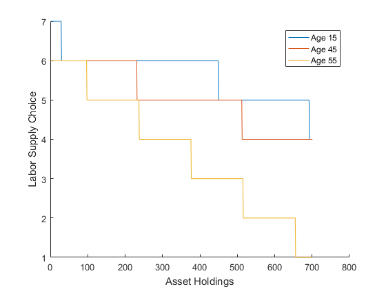

Multi Period Stationary Overlapping Generations Model
Assume an economy in which same number agents are born every period and live exactly 60 periods. In every period, agents make consumption/saving and labor supply decisions that maximize their utility. The solution is found using value function iterations over discretized grids.
Matlab function [download]
clearvars global A alpha delta eta gamma %Production parameters A=1; alpha=0.5; delta=0.1; %Agent and utility parameters AGE=60; beta=0.95; eta=2; gamma=0.5; %Discretized grids kgrid=[0:0.01:7]'; ngrid=[0:0.1:0.9]'; smooth=0.8; eps1=0.00001; eps2=0.00001; %Initialization k1max=zeros(length(kgrid),AGE); nmax=zeros(length(kgrid),AGE); V=zeros(length(kgrid),length(ngrid)); dif=1; loop=1; %Initial Guesses K(loop)=1; N(loop)=1; while dif>eps1 %Value function iterations [~,w,r]=ProductionFunction(K(loop),N(loop)); V1=zeros(length(kgrid),1); for age=AGE:-1:1 for k=1:length(kgrid) for n=1:length(ngrid) c= kgrid(k)*(1+r) + ngrid(n)*w - kgrid ; c= (c).*(c>0); V(:,n)=UtilityFunction(c+eps2,ngrid(n))+beta*V1; end [k1max(k,age),nmax(k,age)]=find(V==max(max(V))); Vmax(k,1)=V(k1max(k,age),nmax(k,age)); end V1=Vmax; end k0=1; for i=1:AGE k_opt(i)=k0; n_opt(i)=nmax(k0,i); k1_opt(i)=k1max(k0,i); k0=k1_opt(i); end K1(loop)=sum(kgrid(k_opt))/AGE; N1(loop)=sum(ngrid(n_opt))/AGE; dif(loop)=abs(K1(loop)-K(loop)); loop=loop+1; K(loop)=K(loop-1)*smooth+K1(loop-1)*(1-smooth); N(loop)=N(loop-1)*smooth+N1(loop-1)*(1-smooth); end figure; hold on; plot(nmax(:,15)); plot(nmax(:,45)); plot(nmax(:,55)); xlabel('Asset Holdings');ylabel('Labor Supply Choice'); legend('Age 15', 'Age 45', 'Age 55'); figure; hold on; plot(k1max(:,15)); plot(k1max(:,45)); plot(k1max(:,55)); xlabel('Asset Holdings');ylabel('Savings Choice'); legend('Age 15', 'Age 45', 'Age 55'); function[u]=UtilityFunction(c,n) global eta gamma u=(((c.^gamma).*(1-n)^(1-gamma)).^(1-eta)-1)./(1-eta); end function[Y,w,r]=ProductionFunction(K,N) global A alpha delta Y=A*(K^alpha)*(N^(1-alpha)); w=(1-alpha)*A*(K^alpha)*(N^(-alpha)); r=alpha*A*(K^(alpha-1))*(N^(1-alpha))-delta; end
